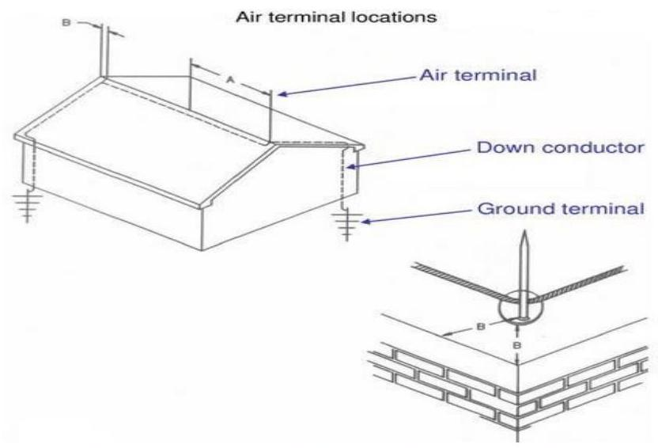

LPS Components & Testing
COMPONENTS OF A Lightning Protection System
1. Air Terminations
A lightning rod is a tall metallic tip, or pointed needle, placed at the top of a building. One or more conductors, often copper strips, are used to earth the rod. Rods are designed to act as the 'terminal' for a lightning discharge.
- 20 feet ( 6 m ) maximum spacing for 10 inch ( 25 ) air terminal height or 25 feet ( 7.6 m ) maximum cm ) air terminal heig
- 2 feet ( 61 cm ) maximum spacing from corner, roof edge or ridge end.
2. Down Conductors
Numerous heavy cables placed around the building in a symmetrical arrangement. This is sometimes referred to as a 'Faraday cage'. These cables are run along the tops and around the edges of roofs, and down one or more corners of the building to the ground rod(s) which carry the current to the ground. This type of LPS may be used for buildings which are highly exposed or house sensitive installations such as computer rooms.
3. Earth Electrodes (Ground terminals)
These are long, thick rods buried deep into the earth around a protected structure. They are normally made of copper or aluminium and are designed to emit positive streamers.
PROTECTION OF BUILDINGS AGAINST LIGHTNING STROKES
Factor to Consider When Designing a LPS
- Geographic location of the structure: this pinpoints the average lightning flush density or the number of flushes to ground to $\mathrm{km}^{2}$ /year.
- The effective collection area of the structure: this is the plan area projection in all directions taking account of the structure's height. This is significant because the larger the structure, the more likeliness of being struck.
- The intended use of the structure: what is housed within the building/use of the building.
- Type of construction: either built of brick, or concrete, or it has steel frame or reinforced frame.
- Location of the structure: e.g. in large towns, forests or isolated hill side
TESTS CARRIED OUT ON LIGHTNING PROTECTION SYSTEMS
- A Lightning Protection Test (LPT) involves all lightning conductors and earth grounding installations being visually inspected and tested by a qualified Electrical Engineer.
- Each individual earth grounding point and its conductors are electronically tested for continuity and resistance to ground.
- The common test conducted on LPS are:
- Continuity Test
- Earth resistance test
Continuity Test
- IEE regulations require conduction of random continuity tests, especially continuity of those parts of the Lightning Protection System which were not visible for inspection during the initial installation and are not subsequently available for visual inspection.
- Tests can readily be made by connecting the phase or neutral conductor of the circuit under test to the main earthing terminal, with the supply disconnected, and then testing between the phase or neutral and protective conductor terminals at each outlet on the circuit
Earth Resistance Test
- Earth resistance test entails measuring the resistance to earth of each local earth electrode and, where practical, the resistance to earth of the complete earth termination system.
- Each local earth electrode should be measured in isolation with the test point between the down conductor and earth electrode in the disconnection position.
- If the resistance to earth of the earth termination system as a whole exceeds 10 ohms , additional electrodes should be installed, where practicable, to obtain the requisite resistance value.
- If there is a significant increase in the value of the earth resistance from previously measured values, additional investigations should be made to determine the reason for the increase and measures taken to improve the situation
The IEE Regulations require routine inspections on all electrical installations, at least once every 12 months. The common electrical inspections include:
- continuity of protective conductors and bonding
- continuity of ring circuits
- insulation resistance
- electrical separation and barriers
- polarity
- earth fault loop impedance
- earth electrode resistance
- operation of earth-leakage circuit-breakers